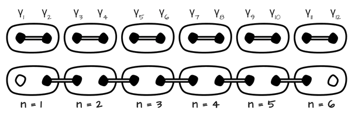

Predznaci i pozicija redaka su ovisni o izboru konvencije. Ovdje smo koristili i poredak |00⟩ |01⟩ |10⟩ |11⟩, no može se naći i druge oblike u literaturi.
Interaktivna simulacija za razumijevanje braiding-a kao osnove topološkog kvantnog računanja
Majorana fermioni su (za naše svrhe) kvazičestice na rubovima Kitaevljevog lanca u topološkoj fazi. Ove čestice su neabelovi anyon-i, odnosno posjeduju svojstvo da njihova zamjena u prostoru ima netrivijalan učinak na valnu funkciju sustava. Iznad je interaktivna simulacija koja pokazuje efekt zamjene mjesta odabranih Majorana koristeći T-spojeve i "counter-clockwise" braiding, te učinak iste u matričnom obliku kao operator na sustav dvaju kubita.
Faze Kitaevljevog lanca
Više o svojstvima Kitaevljevog lanca za primjene u topološkom kvantnom računanju
Matrice zamjene su unitarne matrice dimenzija 4x4. Matrice zamjene najbližih susjeda u našem slučaju izgledaju kao:
Ostale zamjene postižu se kompozicijom više ovakvih zamjena. Tako svaku zamjenu ne-susjednih Majorana možemo dobiti uzastopnim zamjenama susjeda, i kombinacijom takvih zamjena dobiti željeni operator.
Predznaci i pozicija redaka su ovisni o izboru konvencije. Ovdje smo koristili i poredak |00⟩ |01⟩ |10⟩ |11⟩, no može se naći i druge oblike u literaturi.
U našoj simulaciji se nalaze 4 Majorane, koje interpretiramo kao krajeve 2 Kitaevljeva lanca,
pa imamo sustav 2 kubita. Osnovna stanja sustava ćemo opisivati pomoću zauzetosti pojedine
fermionske lokacije ( i ).
Tako:
[1] https://topocondmat.org/w2_majorana/braiding.html
[2] D. Ivanov Non-abelian statistics of half-quantum vortices in p-wave superconductors
[3] C. Nayak, et al., Non-Abelian Anyons and Topological Quantum Computation
[4] J. Alicea, New directions in the pursuit of Majorana fermions in solid state systems
[5] L. Kauffmana, S. Lomonaco, Braiding With Majorana Fermions
[6] M. Freedman, A. Kitaev, et al., Topological Quantum Computation